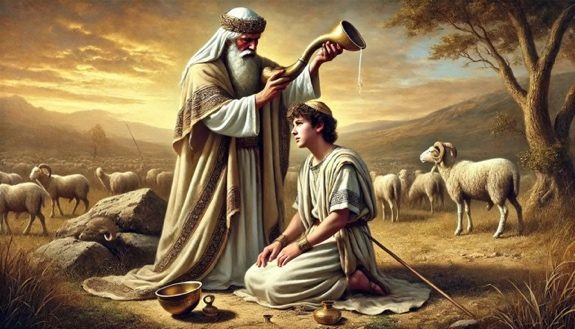
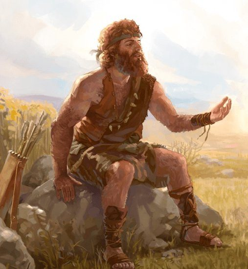
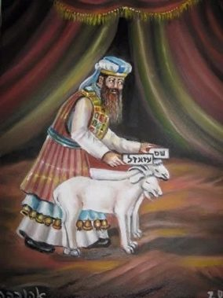
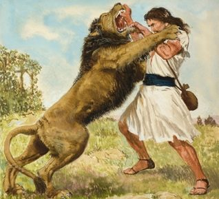
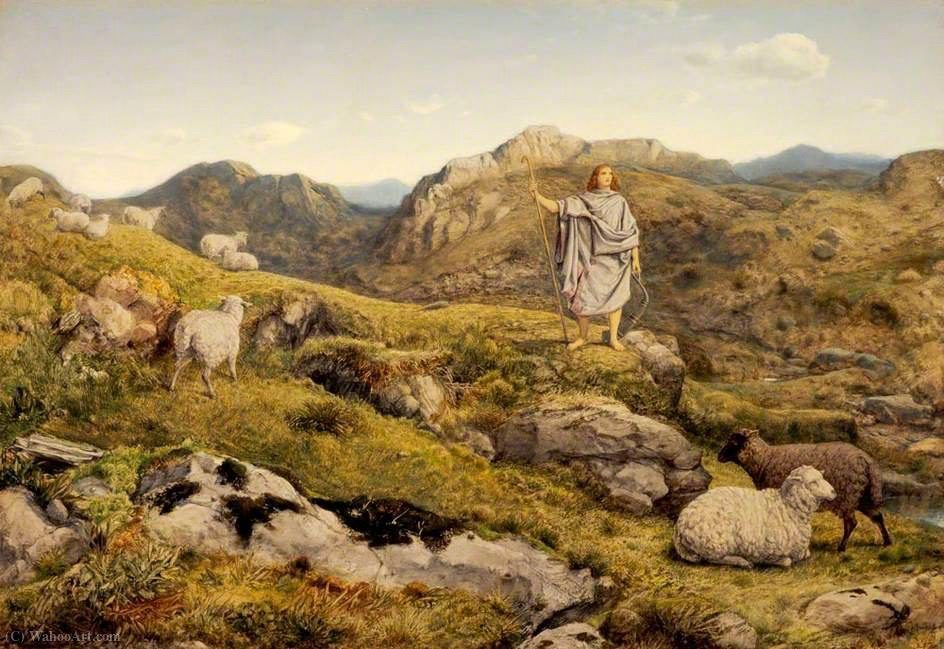
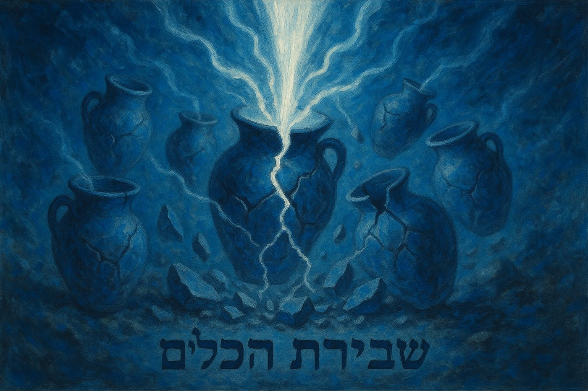
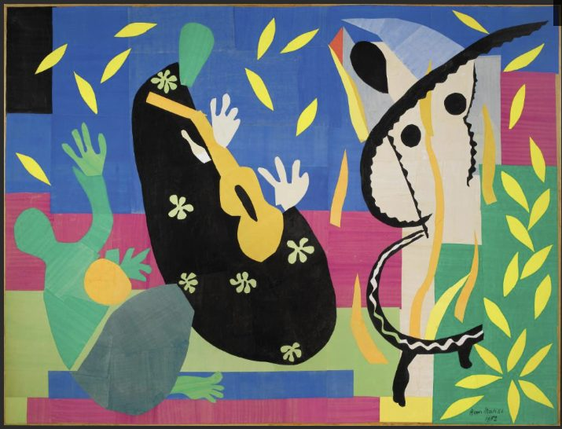

Toldot 5786
Le regard du roi
Le regard roux
Avançons de quelques siècles par rapport au récit de notre paracha.
Nous sommes à Bethléhem, dans le chapitre XVI du premier Livre de Chmouel. Hachem a ordonné à l’exceptionnel prophète Chmouel d’aller chez Yishaï pour y reconnaître celui qui deviendra le second roi d’Israël (Chmouel I 16,1). Yishaï fait défiler ses sept fils : Éliav, Avinadav, Shammah et les autres (Chmouel I 16,6-10). Chacun a l’apparence de la royauté, mais à chaque fois Hachem dit à Chmouel : « לֹא־בָחַר ה’ בָּאֵלֶּה, L’Éternel n’a choisi aucun d’eux » (16,10).
Déconcerté, Chmouel demande : « הֲתַמּוּ הַנְּעָרִים ? Tes enfants sont-ils tous ici ? » (16,11). Yishaï finit par évoquer le plus jeune, celui qu’on avait laissé loin des regards, dans les pâturages, au point que certains le tenaient pour un enfant illégitime : On va donc chercher David. |
 |
|---|
Et voici ce que dit la Torah : « וַיְבִאֵהוּ וְהוּא אַדְמוֹנִי עִם יְפֵה עֵינַיִם וְטוֹב רֹאִי : On le fit venir : il était roux, doté de beaux yeux et d’une belle apparence » (16,12).
C’est à cet instant, explique le Midrash Beréchit Rabba (63,8), que Chmouel est saisi de frayeur. Il voit ce rouge, admoni, et pense immédiatement à Essav, décrit dans Beréchit (25,25) de manière identique :
« וַיֵּצֵא הָרִאשׁוֹן אַדְמוֹנִי, Le premier sortit roux ».
Le Midrash formule la réaction du prophète :
« אמר שמואל : אדמוני ? זה הורג כמו עשו!, Chmouel dit : Admoni ? Sera-t-il un meurtrier comme Essav ? »
L’association est immédiate : même couleur, même intensité, même rigueur, Gvoura à l’état brut.
Pourquoi D. choisirait-Il un enfant qui semble porter la signature d’Essav, d’Édom, l’enfant impie, racha, paroxysme du mal, de la débauche et de la violence ? Chmouel reste dans l’incompréhension, mais D. rectifie immédiatement la perception du prophète et prononce ces mots décisifs :
« הוּא אַדְמוֹנִי : אֲבָל עִם יְפֵה עֵינַיִם, Oui, il est roux, mais ses yeux sont beaux ».
Ce n’est pas un simple détail physique : c’est, selon nos Maîtres, l’une des clés qui permet de comprendre la différence fondamentale entre Essav et David.
Nous verrons dans cette étude, qu’Essav est celui dont le regard, trop rouge et trop saturé de lui-même, déforme la réalité jusqu’à la briser, et se briser, tandis que David, porteur de la même force rouquine, possède un regard capable de traverser les apparences et d’y discerner la beauté et la vérité.
Et nous tenterons de dévoiler l’enjeu profond de la création : passer du chaos apparent d’un monde brisé à la royauté d’Israël, grâce à notre capacité à transformer le regard qui casse en regard qui répare, pour participer à l’alliance que D. propose aux hommes.
Le regard rouge
Revenons à notre paracha et reprenons l’histoire d’Essav, l’aîné d’Its’hak, celui qui, en apparence, avait tout pour réussir.
Né dans une famille de géants spirituels, il grandit sous la lumière protectrice d’Its’hak et de Rivka, deux des plus hautes figures de notre tradition, et sur les genoux de son grand-père Avraham, avec lequel il entretenait un lien particulier. C’était un enfant aimé. La Torah le dit explicitement : « Its’hak aimait Essav ». Quant à Rivka, expliquent les commentateurs, il n’est même pas nécessaire de préciser qu’elle aimait son fils : l’amour maternel va de soi.
On imagine aisément Essav : chasseur hors pair, homme de terrain, guerrier au tempérament puissant, charismatique, à l’opposé du discret Yaacov, « l’homme des tentes » (Beréchit 25,27). Son statut d’aîné, la be’hora, lui ouvrait non seulement l’accès à la double part d’héritage, la continuité du service divin entamé par Avraham, mais aussi à la direction du clan, à la prêtrise et donc à la royauté. Tout le potentiel d’une destinée hors norme se trouvait entre ses mains ; il avait toutes les cartes pour devenir un patriarche, un guide, un pilier d’Israël.
Mais Essav, l’admoni, le roux, débordant d’une vitalité sanguine, incarne une énergie brute, ambivalente : une force colossale, mais difficile à maîtriser, à orienter, à canaliser.
Un psychanalyste aurait probablement vu en lui l’aîné surinvesti, saturé d’attentes, voué à la prêtrise, à la royauté, héritier d’une lignée de géants spirituels. Nous constatons d’ailleurs dans la Torah que les aînés ont du mal à tenir leur rôle : Caïn (premier fils d’Adam, voué à être Cohen Gadol) tue son frère Hevel ; les aînés du peuple d’Israël au temps de Moché Rabbénou prennent part à la faute du veau d’or et perdent leur statut de prêtres… Seule ’Aharon tiendra son rôle d’aîné, et assumera la fonction de Cohen Gadol. Et Essav, malgré tout l’amour paternel d’Its’hak, finira par perdre pied et fauter gravement, le jour où son repère moral, Avraham, disparaît.
La Gemara Bava Batra 16b nous renseigne à ce sujet : Ces 5 fautes fondamentales ont un point commun : elles refusent toute élévation spirituelle et tout avenir sacré, elles refusent tout regard intérieur puisque respectivement, Essav rejette : l’unicité de D., la sainteté du corps et de la famille, le monde futur et la finalité divine, la valeur sacrée de la vie, ainsi que la responsabilité spirituelle qui lui incombe en tant que beh’or. |
 |
|---|
Yaacov, le frère cadet, est ainsi contraint de récupérer le droit d’aînesse, troqué pour un plat de lentilles rouges, ainsi que les habits d’Essav que Rivka conservait pour le rôle de Cohen Gadol, rôle que refuse l’aîné légitime d’Its’hak. Il sera obligé d’endosser littéralement le costume d’Essav, pour relever les mains d’Essav et jouer les deux rôles. Its’hak se retrouve alors face à un Yaacov habillé du costume d’Essav : « La voix est la voix de Jacob, et les mains sont les mains d’Essav » (Genèse 27,22).
Its’hak souhaitait confier à Essav la bénédiction matérielle et politique, la domination sur les nations et sur ses frères, puisque son intention était claire : Essav, l’aîné, serait le dirigeant matériel roi et Cohen Gadol et Yaacov le maître spirituel. Mais au moment où Its’hak décida de transmettre à Essav la bénédiction abrahamique, Rivka, qui voyait la scène par Roua’h Hakodech, intervint et envoya Yaacov : « Va au troupeau et cherche-moi deux bons chevreaux ; j’en ferai une nourriture savoureuse pour ton père » (Beréchit 27,9).
Car Essav, pensait-elle, était « trop brut et non formé ». Il risquait de faire exploser le monde si on lui donnait ces forces matérielles. Il n’avait ni la maîtrise de soi ni la droiture nécessaire pour canaliser une telle responsabilité. Rachi explique qu’Essav rejetait surtout les devoirs du service divin, le rôle de Cohen. Yaacov, qui avait déjà acquis le droit d’aînesse, qu’Essav avait méprisé (Beréchit 25,34), devait ainsi assumer les responsabilités de Cohen Gadol qui lui étaient désormais dévolues. À telle enseigne que l’entrée de Yaacov dans la tente d’Its’hak avec les deux chevreaux préfigure le service du Cohen Gadol à Yom Kippour. Essav, lui, refusait la pureté, la discipline et l’exigence d’une vie sacerdotale, et Yaacov désirait précisément ce qu’Essav fuyait. Lorsqu’il entra dans le sanctuaire intérieur de son père, c’était presque en prêtre, assumant déjà la fonction que ses descendants réaliseraient dans le Beth Hamikdash. |
 |
|---|
Et ce fut donc Yaacov qui reçut cette bénédiction, réunissant en lui les trois couronnes : celle de maître spirituel (qui lui était acquise depuis la naissance), celle de la grande prêtrise (acquise à son grand frère et confirmée par Its’hak) et la couronne royale (lors de la berakha de son père).
Rappelons que la halakha interdit au Cohen Gadol d’assumer simultanément un pouvoir politique, l’histoire de la dynastie hasmonéenne de ‘Hanouka le montre tragiquement. Essav ne pouvait donc, de toute façon, cumuler la prêtrise et la royauté. Yaacov devra alors porter momentanément toutes les fonctions, pour ensuite les distribuer à ses descendants.
En arrivant chez son père, chargé des chevreaux cuisinés, constatant que les berakhot ont été données à Yaacov, Essav explose, il voit rouge, et comme souvent, est esclave de son propre regard des évènements qu’il subit.
Il voit la mort d’Avraham uniquement sous un angle négatif, il ne voit dans le plat que sa couleur rouge et l’échange aussitôt contre son droit d’aînesse, celui d’être grand prêtre. Il profite ensuite de la cécité de son père pour se livrer à des pratiques idolâtres, d’avoda zara (source : Rachi). Enfin, lorsqu’il constate son propre échec et comprend que son père a béni Yaacov, il réalise que l’une des causes se trouvait dans les femmes qu’il avait choisies. Il “voit” alors que « les filles de Canaan (ses femmes) étaient mauvaises » (Beréchit 28,8). C’est à ce moment qu’il décide intérieurement de tuer son frère après la mort de son père, mais par respect pour Itsh’ak il s’en abstient.
Essav est un homme écrasé par son propre regard. Il est incapable de lire correctement la réalité, il explose de l’intérieur car la puissance de la pression qu’il subit et qu’il ne sait pas canaliser est trop forte pour lui. Son regard sur le monde est désormais brisé, il est en chvira, en rupture.
La Torah ne se contente pas de brosser le portrait tragique d’Essav. Elle nous offre, en miroir, une autre figure rouquine, porteuse de la même énergie de Gvoura, mais orientée vers une destinée tout à fait différente : le roi David.
C’est en analysant sa vie, que le contraste devient saisissant et que se dévoile ce que peut devenir le “regard rouge” lorsqu’il est traversé par la beauté et par la vérité.
Le regard royal
Commençons par le début et voyageons à nouveau au chapitre XVI de Chmouel, au début de l’histoire de David, et analysons sa conception et sa naissance, riche d’enseignements. Car l’âme de David est tellement puissante qu’elle ne pouvait descendre dans ce monde qu’à la condition d’un subterfuge cosmique destiné à tromper les forces du mal, que nous allons essayer de présenter.
À l’inverse d’Essav, qui était un enfant choyé, admiré, entouré, David grandit dans l’ombre, marqué dès sa naissance par le mystère et le rejet. La tradition rapporte en effet que sa mère, séparée (mais non divorcée) de son mari Yishaï, tomba enceinte dans des circonstances qu’elle refusa d’expliquer. Cette opacité entraîna un terrible soupçon : ses propres fils, les frères de David, la suspectèrent d’infidélité et jurèrent d’éliminer l’enfant qu’ils considéraient comme un mamzer.1.
Mais Yishaï ressentit une compassion profonde pour ce nouveau-né et décida de le garder, tout en l’éloignant du foyer familial pour apaiser les tensions. C’est ainsi que David grandit comme un berger solitaire, méprisé, marginalisé, l’exact opposé d’Essav : sans reconnaissance, sans statut, sans amour apparent, sans pression non plus. Il sera lui aussi combatif, prêt à défendre son troupeau (la tradition lui attribue notamment un combat à mains nues contre un lion) prêt à défendre l’honneur de D. dans la fameuse histoire de David et Goliath, et défenseur du peuple d’Israël lors des nombreuses guerres qu’il eut à mener. |
 |
|---|
Mais l’histoire de sa naissance ne s’arrête pas là. Lorsque David naquit, il n’était destiné qu’à vivre trois heures. Nos Sages dévoilent en effet que David n’avait pas de vie propre : il ne doit les nuits des années de sa vie qu’à Adam haRishon, qui lui légua soixante-dix de ses années (mourant ainsi à 930 ans), et il ne doit ses jours qu’aux patriarches : Avraham : cinq ans (il meurt à 175 ans au lieu de 180), Yaacov : vingt-huit ans (il meurt à 147 ans, soit 28 ans de moins qu’Avraham), Yossef : trente-sept ans (il meurt à 110 ans, 37 ans de moins que Yaacov). On ne retient aucune année d’Its’hak, qui, lui, meurt comme prévu à 180 ans, car sa Gvoura (sa rigueur) ne devait pas entrer dans la construction de la royauté d’Israël.
En réalité, nous devons apporter, au nom du Galia Raza, attribué aux élèves du Ari zal, un autre épisode qui traite de la descente de l’âme de David HaMelekh dans ce monde-ci, et il faut pour cela revenir au début de notre paracha Toldot.
Le Galia Raza explique que le projet spirituel initial, celui que Rivka et Its’hak portaient dans leur prière, était la naissance simultanée de deux êtres d’exception destinés à façonner l’histoire d’Israël : Yaacov, et un roi, le roi d’Israël, David HaMelekh. Pour qu’Its’hak puisse vivre (voir pour aller plus loin), et pour que l’histoire d’Israël puisse se déployer conformément à la promesse divine, la naissance de David a été repoussée, et c’est Essav qui est né à sa place.
Yaacov est alors obligé de reprendre la royauté d’Essav pour la projetter à son descendant David Hameleh, le futur roi d’Israel. Nous pouvons d’ailleurs relir le transfert des habits précieux dont Yaacov doit se saisir pour recevoir la beraha (avec l’aide de sa mère) à la lumière du Mirdash qui va les qualifier de vêtements royaux (Beréchit Rabba, chapitre 65, paragraphe 16) :
« Rabban Chim‘on ben Gamliel dit : Toute ma vie, j’ai servi mon père, et pourtant je ne l’ai pas servi même dans un centième de la manière dont Essav servit son père. Moi, lorsque je servais mon père, je le servais avec des vêtements salis, et lorsque je sortais en voyage, je sortais avec des vêtements propres. Mais Essav, lorsqu’il servait son père, ne le servait qu’avec des vêtements de royauté. Il disait : “Il n’est pas honorable pour mon père d’être servi autrement qu’avec des vêtements royaux.” »
Ainsi le jumeau lumineux a été différé, le jumeau obscur a pris la place.
 Figure 1 David dans le désert, William Dyce |
Et c’est précisément dans cet espace manquant, dans cette brèche, que s’inscrit toute la tension spirituelle entre Yaacov et Essav, jusqu’à ce que David, beaucoup plus tard, apparaisse enfin : non plus comme jumeau biologique, mais comme réparation de tout ce que cette naissance détournée avait laissé en suspens. On comprend à ce moment que David ne peut que ressembler à Essav : il doit assumer le même monde, porter les mêmes vêtements, être poilu, rouquin et être un dirigeant guerrier combatif… |
|---|
C’est dans le désert, loin des regards accusateurs et des soupçons, que David grandit. Là, dépouillé de tout statut social mais façonné par la solitude et la contemplation, il devient celui dont la vision transperce les apparences.
Nous comprenons alors le premier Midrash évoqué en introduction : David symbolise lui aussi cette force rouge, mais il lui ajoute un regard profondément marqué par la beauté. Le feu intérieur de David passe à travers le filtre du regard, représenté ici par yafé ‘einayim, « les beaux yeux ».
Car la Malkhout est, elle aussi, du côté de la rigueur, du Din : le roi doit sauver le peuple de lui-même, il doit parfois le contraindre par la force sous l’autorité du Sanhédrin, planifier et organiser les guerres de territoires. Le roi juge ses sujets et ne peut être jugé par eux. Mais, ici, il s’agit d’une Malkhout illuminée, maîtrisée, dirigée vers l’attribut de vérité.
Ce regard exceptionnel que porte David, loin d’être simplement un attribut physique, traduit une capacité rare à transfigurer la force brute en lumière spirituelle.
Là où la Gvoura, l’énergie rouge, aurait pu s’exprimer par la violence ou la domination, David, grâce à la beauté de son regard, parvient à sanctifier cette puissance et à l’orienter vers la vérité.
C’est cette nuance essentielle qui justifie que la royauté d’Israël ne réside pas seulement dans la force, mais dans la sagesse du discernement et la capacité à voir au-delà des apparences, à embrasser la complexité du réel tout en poursuivant la quête du Emet, de la Vérité.
Voilà donc ce que D. dit à Chmouel : David possède la force d’Essav, mais il possède les yeux de la vérité pour la sanctifier : il prend les armes sur ordre du Sanhédrin, les Sages d’Israël (poursuit le Midrash), qui sont ceux qui possèdent les yeux pour voir2. Il met sa Gvoura au service du Emet pour établir un royaume.
David incarne une royauté qui conjugue courage et profondeur, force et harmonie, préparant le terrain pour une lignée messianique guidée par un regard qui sait reconnaître, trier, purifier et magnifier la lumière enfouie dans les réalités les plus obscures.
Ce « regard du roi » n’est pas seulement une qualité psychologique ou morale : il est l’écho humain d’un regard bien plus ancien, celui par lequel D. a contemplé et structuré les mondes. Pour comprendre ce que David répare, il faut remonter à la source du chaos qu’incarne Essav, à ce monde brisé où le regard divin lui-même a organisé la création sous forme de lumières trop puissantes pour leurs réceptacles.
C’est là que se joue, en profondeur, le passage du regard rouge au regard du roi : il nécessite de passer par le regard qui brise, le regard réparateur.
Le regard réparateur
Le chapitre suivant est un peu compliqué mais nécessaire à la compréhension des protagonistes du chiour et du travail qui nous ait dévolu en tant que peuple d’Israel. C’est pourquoi avant de présenter la suite de cette modeste étude, il est nécessaire de préciser, quelques principes introductifs, permettant d’appréhender ces notions, étant entendue que nous ne ferons qu’effleurer un sujet très complexe et très profond.
Le monde matériel que nous percevons n’est en réalité que l’enveloppe la plus extérieure et la plus matérielle d’univers spirituels bien plus élevés.
Tout ce qui est créé dans l’univers est constitué de lumières et de réceptacles les kelims qui permettent de recevoir ces lumières.
Ces lumières sont des émanations et restrictions de l’infini qui ont pour objectifs de se déverser dans les mondes inférieurs.
Les sages utilisent des terminologies de notre monde pour nous renseigner sur les émanations du Créateur et les modalités de création afin de rendre intelligibles le processus de création mais il faut bien avoir à l’esprit qu’il n’y a rien de telle dans les mondes supérieurs.
Dans Sa sagesse infinie, afin de nous donner une véritable part dans l’œuvre de la création et de faire de nous dans une certaine mesure, Ses partenaires, D. a créé l’un des mondes spirituels, très antérieur à notre monde, avec une imperfection volontaire, structurée de façon à engendrer un certain degré de chaos.
Ce monde est principalement façonné par l’une des émanations du divin dénommé « Le Regard ». Nous pouvons l’appeler pour continuer le chiour : le monde du Tohou, le olam hatohou, puisqu’il subira une brisure fondamentale, une chivra et sera ensuite remplacé par un monde réparé olam hatikoun.
Nos sages nous révèlent que dans ce monde : A partir d’un certain seuil, les lumières issues du regard sont d’une intensité disproportionnée par rapport à leurs kélim, qui sont disposés selon un unique axe vertical, suivant la logique d’un regard qui balaye du haut vers le bas pour créer ce monde. Il y réside nécessairement une énorme tension. |
 |
|---|
En effet, les lumières descendent les unes après les autres, selon une droite linéaire de haut en bas pour se placer dans les récipients disposés à cet effet (du plus elévé au moins élévé). Mais ainsi, un récipient doit non seulement contenir sa propre lumière, mais aussi la pression de toutes celles qui vont suivre et descendre après la sienne.
Pour appréhender cette tension, il faut imaginer une cascade verticale de lumières, une chute directe, sans détour qui se déverse dans des recipients. Chaque récipient ne reçoit pas une lumière isolée, mais l’accumulation des lumières qui se précipitent derrière elle les uns après les autres.
À un certain moment, l’intensité est trop forte : la lumière accumulée dépasse la capacité du récipient. Celui-ci se fissure, puis se brise, ainsi que tous les autres. C’est : La Shvirat HaKélim : la Brisure des Réceptacles.
Les Kélim éclatent, et projettent leurs fragments dans les mondes inférieurs, comme une pluie d’éclats.
Mais, et c’est ici que se trouve la clé de la réparation future, ces éclats emportent avec eux des étincelles de lumière divine, piégées dans les mondes inférieurs et notamment le nôtre. Ils se trouvent alors cachées dans les débris de la brisure qu’il faudra retrouver et replacer au sein d’un monde réparé, olam hatikoun.
L’essentiel de notre tâche est alors de reconstruire des kélim plus solides, et de les organiser différemment : non plus empilés verticalement mais structurés en axes (kavim).
Il faudra trois axes pour être précis : celui de la rigueur à gauche, celui de la bonté à droite, et celui du milieu de l’harmonie, la vérité et la beauté, afin de favoriser l’émergence de liens entre les lumières et de solidifier l’édifice.
C’est aussi pour cela (comme nous l’avons vu dans les chiours précédents) qu’Avraham et Its’hak convergent vers Yaacov, afin de disposer d’un ‘Hessed et d’une Gvoura qui dialoguent avec Tiféret : la vérité, le Emet, l’harmonie, la miséricorde, la beauté.
Ce processus passe par un tri et une élévation des étincelles de lumière, révélés par la Torah : par notre Avoda, nos prières, l’étude de la Torah écrite et orale, la pratique des mitsvot, mais parfois aussi par les gestes les plus simples : manger, boire, se trouver à un endroit donné à un moment donné. D. crée volontairement un monde “risqué”, fragile, pour nous donner la possibilité de participer à son achèvement.
Et nous participons ainsi à la reconstruction de ce monde brisé : par notre regard, en regard du Regard du Créateur, nous devons comprendre ce qui s’opère, déceler le bien du mal et briser les écorces de ce monde pour faire remonter les étincelles de lumière à la bonne place dans le monde du tikoun, de la réparation3.
 Figure 2 Henri Matisse, la tristesse du roi |
Tout cela est codé dans la Torah, dans l’épisode des sept rois d’Édom, les descendants d’Essav (Beréchit 36), qui La lumière règne, le récipient se brise, nous apprend le texte. Ils se succèdent ainsi sur un seul axe linéaire, et ne peuvent donc maintenir leur royauté et l’enseigner à leur successeur. Cette succession, loin d’être anodine, illustre la fragilité d’un système qui ignore l’articulation nécessaire entre les axes, condamnant ainsi chaque règne à une rupture inévitable. |
|---|
C’est précisément cette absence de transmission et de stabilisation qui prépare le terrain au chaos incarné par Essav-Edom, car la royauté ne se construit pas sur la puissance brute, mais sur la capacité à relier, à harmoniser les forces.
Essav, comme nous l’avons vu, est un homme au regard rouge, brisé, qui refuse la Avoda qui lui était dévolue ; il s’ampute lui-même de ses bras et de ses jambes, en vendant son droit d’aînesse (lui donnant les droits et devoirs du Cohen Gadol, voir supra) mais considère quand même que la couronne royale doit lui être apposée.
Yaacov, ne souhaitant pas laisser le monde en proie au chaos, va devoir récupérer les mains d’Essav et assumer son rôle ; il doit désormais tracer les trois kavim qui vont lui permettre de soutenir l’édifice spirituel, réaliser le Tikoun et le projeter dans la Malkhout de David HaMelekh.
Nos Sages nous font d’ailleurs remarquer qu’à la suite de la faute originelle, le Serpent perd les bras et les jambes qui le soutenaient pour devenir un être rampant, et le Ari zal nous révèle dans le Sha’ar HaGilgoulim qu’Essav n’est autre que la réincarnation du serpent, et Yaacov d’Adam Harishon.
Ainsi, Yaacov, en récupérant les éléments dispersés, amorce le Tikoun, la réparation, en introduisant la structure des trois axes, fondement d’une royauté pérenne. La transition s’opère donc entre la chute répétée des rois d’Édom et l’émergence d’une nouvelle dynamique, portée par l’harmonie du système, prélude à l’avènement de David, le roi au beau regard, qui voyait la beauté, l’harmonie.
La Torah le souligne explicitement dans le passage des sept rois d’Édom (Genèse 36,31) : « Voici les rois qui régnèrent dans le pays d’Édom, avant qu’un roi règne sur les enfants d’Israël. » Elle énumère alors sept rois qui « règnent puis meurent », illustration transparente de la dynamique du Tohu et de la brisure.
Et le texte conclut par un huitième roi, Hadar, littéralement « la Splendeur », dont la description tranche radicalement avec les précédents : il se marie, c’est-à-dire qu’il entre dans une relation, dans un échange, dans une polarité qui accepte l’autre, il assume le Tikoun, exactement ce qui manquait aux autres rois. Et la Torah ne mentionne pas sa mort dans ce passage.
Les Maîtres dévoilent qu’Hadar représente déjà l’essence de David HaMelekh.
Le roi éternel, le roi de la réparation, celui capable de voir l’histoire « par transparence », d’unifier apparence et intériorité, de prendre les armes des mains d’Essav et de chanter la voix de Yaacov4.
David est précisément cette fusion réparatrice : c’est lui qui unifie le système, les attributs divins au travers de la vérité de Yaacov, et fait converger le peuple d’Israël vers un objectif commun : l’avènement de la royauté de D., la construction du Beth Hamikdash et l’unité du peuple d’Israël.
La tradition nous enseigne que « Yaacov n’est pas mort » et que « David est vivant ». Leur association finale est liée à la Guéoula, celle où nous aurons fini de récupérer les étincelles de sainteté issues du monde du chaos, pour les replacer dans le monde réparé, le Beth Hamikdash spirituel.
David est celui qui relie les lumières alignées des mondes spirituels en kavim, sous forme de triangles, en Magen David, pour conclure la réparation de la destruction primordiale, initiée par Yaacov Avinou.
Talmud, Rosh Hashana 25b "דָּוִד מֶלֶךְ יִשְׂרָאֵל חַי וְקַיָּם" :« David, Roi d'Israël, est vivant et il soutient »(les mondes…) |
|
|---|---|
Yehi Ratson, que telle soit la volonté divine,
Que nous soyons capables de faire remonter les étincelles de lumière disséminées dans le monde,
de les réorganiser pour participer à sa réparation.
Que nous soyons capable de voir l’émergence de Ta Royauté.
Chabbat Chalom !
 Si on doit essayer de ne retenir qu’un point de comportement de cette étude
Si on doit essayer de ne retenir qu’un point de comportement de cette étude
Nous observons un personnage en proie au chaos, renfermé sur lui-même, incapable de libérer sa lumière, paroxysme de la déchéance et du mal, dont le père n’aura de cesse de vouloir le ramener à la téchouva par son amour. Dans une certaine mesure, Its’hak réussira par sa clairvoyance à amoindrir Essav et à en extraire de nombreux sages d’Israël, jusqu’à David HaMelekh lui-même.
Faisons de même avec nos proches : ne cessons pas de leur prodiguer le regard d’amour dont ils ont besoin pour se sauver d’eux-mêmes. Et lorsque l’on expérimente, dans sa propre vie, l’épreuve du deuil, du chaos, de la brisure, il faut se rappeler que nous avons un Père dans le Ciel qui veut donner du bien à Ses créatures et qui n’a de cesse de vouloir les ramener par Son regard.
 L’idée de la semaine
L’idée de la semaine
Le monde commence par un regard divin qui brise. Essav incarne ce regard sans filtre. Yaakov l’équilibre. Et David le guérit. Toute l’histoire biblique tient dans cette dynamique : apprendre à voir juste.
En chez chacun de nous, il existe : un regard d’Essav : impulsif, brut, immédiat, un regard de Yaakov : intérieur, profond ; et un regard de David : qui illumine sans détruire.
La Torah nous demande de devenir des êtres aux “beaux yeux”, c’est-à-dire capables de recevoir la lumière forte… sans briser les réceptacles.
Pour aller juste un peu plus loin…
Nous avons vu que selon le Galia Raza, en réalité, celui qui aurait dû naître comme véritable jumeau de Yaacov n’était autre que le roi David. Pourquoi alors David n’est-il pas né à ce moment-là ? Pourquoi est-ce Essav qui apparaît en lieu et place de ce jumeau spirituel attendu ?
Le Galia Raza rattache ce changement à l’épisode de la Akéda, lorsqu’Avraham s’apprête à offrir Its’hak en sacrifice. Après l’intervention de l’ange qui arrête le couteau, le Satan se plaint devant D. : il rappelle qu’Avraham avait été prêt à aller jusqu’au bout et que, dans une certaine mesure, la logique de l’épreuve exigeait qu’Its’hak soit réellement offert. Le Satan estime alors qu’il y avait une promesse implicite, et que si Its’hak n’a finalement pas été immolé, une forme de « dette » spirituelle demeure.
D. accepte l’argument et fait naître Essav dans la famille d’Avraham mais le livre au domaine du mal : Essav (on conçoit alors encore mieux le lien entre Essav et Avraham). Ainsi, ce n’est pas Its’hak qui tombe entre les mains du Satan, mais Essav. Il devient dans l’histoire le porte-étendard d’un monde extérieur, rude, confrontant pour Israël, qui servira de terrain d’épreuve pour le peuple
Les Maîtres de la hassidout relisent ces concepts en les traduisant dans le langage de l’âme : la Gvoura brute d’Essav devient l’image de nos pulsions non travaillées, alors que le regard de Yaacov/David symbolise notre capacité à intégrer ces forces dans le service de D. Chacun de nous, à son niveau, passe du Tohu au Tikoun lorsqu’il apprend à regarder sa propre vitalité avec vérité, douceur et exigence, et à la mettre au service d’un projet plus grand que lui.
Paris, le 27 Hechvan 5786 rédigé par B.A. Toute réflexion peut être adressée avec joie sur le : mail. Les chiourims se trouvent sur les liens Telegram et sur google drive |
|---|
 Plan du chiour
Plan du chiour
Le regard roux : David la prolongation d’Essav Mise en parallèle d’Essav et de David, deux figures rouquines. Essav : regard qui déforme la réalité. David : regard qui révèle la vérité. Le regard rouge : Essav face à sa propre brisure Essav, destiné à une grandeur spirituelle (be’hora, kehouna, leadership). Un homme submergé par ses pulsions et par son propre regard :
Le « regard rouge » comme symbole d’une Gvoura sans Daat, qui conduit à la casse. |
Le regard royal : David, le jumeau différé David, le « jumeau spirituel » qui aurait dû naître avec Yaacov. Un enfant rejeté, marginalisé, mais qui développe un yafé ‘einayim, un regard beau et vrai. La royauté de David comme capacité à :
Le regard réparateur Le monde du Tohu : lumières trop fortes, kélim qui se brisent, chaos voulu par D. Les sept rois d’Édom : succession de royautés qui règnent et meurent, sans transmission ni axe. Yaacov puis David : introduction des trois kavim, passage du Tohu au Tikoun. |
|---|
Notre avoda consiste à regarder le monde brisé avec le regard du roi, pour discerner la lumière dans le chaos, et participer à la réparation du monde.
📚 Sources du Chiour
Torah – TanakhBerechit 25,25 ; 25,27–34 ; 27 ; 28,8 ; 36,31–39.Shmouel I 16,1–13.Bamidbar 6,23–27
|
Arizal Etz ‘Haïm, Sha’ar HaNekoudim 4–8 : Tohu, brisure des kélim. Sha’ar HaHakdamot, Derouch HaTohu : verticalité des lumières. Sha’ar HaGilgoulim, introductions 22, 31, 36 : Essav/serpent, David/70 ans d’Adam. Rishonim des Mékoubalim Ramak, Pardes Rimonim, Sha’ar 22 : Hadar et le Tikoun. Séfer HaYashar, section sur David. Ben Ish ‘Haï, Ben Yehoyada sur BB 17a : contexte familial de David. Hassidout Pri Tsadik (Vayishla’h 1) : Hadar ↔︎ David. Sefat Emet (Toldot) : Essav comme Gvoura non canalisée. Likoutei Moharan : réparation par le regard. Tanya chap. 1, 6, 37 : élévation des étincelles. Écrits post Arizal Galia Raza (élèves du Ari zal), Parashat Toldot : David comme jumeau spirituel différé : Essav né à sa place. Cours Rav David Shoushana Rav Yehouda Charbit Rav Raphael Pinto |
|---|
NB : Si quelqu’un retrouve un texte enseignant qu’Essav est sorti du ventre de sa mère en lui détruisant la matrice, pour l’empêcher d’enfanter David Hameleh, je vous prie de bien vouloir me l’adresser par mail.
En réalité, les Sages révèlent une tout autre histoire : Yishaï, pris d’un doute sur sa légitimité au sein du peuple d’Israël (car descendant de Ruth la Moabite), décida d’épouser sa servante. Mais la mère de David, dans un geste rappelant celui de Léa avec Rahel, échangea sa place avec la servante à l’insu de son mari. Ainsi, David fut conçu dans la pureté, mais personne ne le sut. La mère de David gardera ce secret jusqu’à l’onction de son fils, elle révèlera alors qu’il est l’enfant légitime d’Yishaï.↩︎
« Le sage à ses yeux dans sa tête, » Kohelet (2:14)↩︎
C’est également ce qui explique, dans une perspective mystique, la nécessité historique de l’exil après la destruction du Temple : les Beth Hamikdach avaient pour fonction d’attirer à eux ces étincelles dispersées à travers le monde entier, ils convient désormais au peuple juif d’être des temples pour les rassembler.↩︎
David écrira 147 chapitres de Téhilim (avant subdivision qui conduira à 150), écho aux 147 ans de vie de Yaacov.↩︎